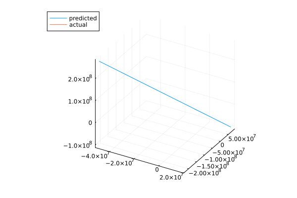
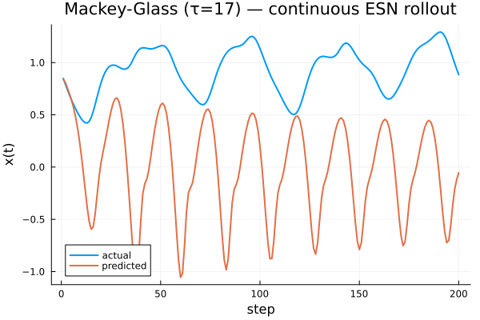

Continuous-Time Reservoirs from a SciMLProblem
ReservoirComputing.jl exposes a continuous-time reservoir layer, SciMLProblemReservoir, that wraps any AbstractSciMLProblem (ODEProblem, SDEProblem, DDEProblem) and plugs it into the standard collectstates / predict pipeline. The implementation lives in the RCODEReservoirExt package extension, so the extension is loaded automatically once SciMLBase and DataInterpolations are in scope. The user picks a concrete solver package (e.g. OrdinaryDiffEqTsit5, OrdinaryDiffEq) separately — its solver types are what the reservoir's args[1] consumes.
This page walks through the core type, how time is laid out internally, and a worked example that checks the continuous reservoir against a closed-form analytic solution.
Loading the extension
using ReservoirComputing
using SciMLBase
using DataInterpolations
using OrdinaryDiffEqTsit5 # or `OrdinaryDiffEq`, or whichever solver pkg you needSciMLBase provides solve / remake, DataInterpolations is used for the per-window input signal in the autoregressive predict path, and the chosen OrdinaryDiffEq solver package brings the concrete solver type (Tsit5(), Euler(), …).
Constructing a reservoir from an ODE problem
The constructor follows the DiffEqFlux NeuralODE pattern:
SciMLProblemReservoir(prob, sampler, tspan, args...; kwargs...)prob— anyAbstractSciMLProblem. The reservoir's initial state is taken fromprob.u0; the ODE right-hand side reads the time-varying input throughp.input(t)(injected by the extension at solve time).sampler— anAbstractSampler. The bundledTerminalStateSamplingrecords the reservoir state at the end of each input window.tspan— overridesprob.tspanviaremakeat solve time. The input column grid is synthesised fromtspanand the input width.args...— forwarded tosolvepositionally; the solver algorithm is the first element (Tsit5(),Euler(), …).kwargs...— forwarded tosolve. The three keyssaveat,save_everystep, anddenseare owned by the helper and rejected at construction.
The user's ODE can carry static parameters as a NamedTuple (or nothing / NullParameters() if there are none). Anything else is rejected with an ArgumentError. The reserved name :input cannot appear in prob.p because the extension uses it to inject the interpolated input signal.
How time is laid out
collectstates receives a discrete data::AbstractMatrix of shape (channels, n_samples) and turns it into a continuous-time input:
tspanis split inton_samplesequal-width windows of widthΔt = (t1 - t0) / n_samples.- Input column
kis held over windowk(t0 + (k-1)Δt ≤ t < t0 + kΔt) via zero-order hold. - The reservoir state at the end of window
k(t = t0 + kΔt) is sampled and becomesstates[:, k].
This input-at-start / sample-at-end alignment matches the discrete update semantics: states[:, k] is the reservoir state after processing input k, with no off-by-one offset.
A worked example: linear ODE with closed-form solution
The scalar linear ODE dx/dt = -x + u(t) with u(t) = 1 and x(0) = 0 has the closed form x(t) = 1 - exp(-t). Running it through the continuous reservoir at a tight solver tolerance recovers that curve to within ~1e-6:
using ReservoirComputing
using SciMLBase
using DataInterpolations
using OrdinaryDiffEqTsit5
using Random
function linear_rhs!(dx, x, p, t)
input_t = p.input(t)
dx .= .-x .+ input_t
end
n_samples = 10
tspan = (0.0, 1.0)
Δt = (tspan[2] - tspan[1]) / n_samples
sample_ts = collect(range(tspan[1] + Δt, tspan[2]; length = n_samples))
u_const = 1.0
data = fill(u_const, 1, n_samples)
initial_state = [0.0]
prob = ODEProblem(linear_rhs!, initial_state, tspan, (;))
res = SciMLProblemReservoir(
prob, TerminalStateSampling(), tspan, Tsit5();
reltol = 1.0e-10, abstol = 1.0e-12
)
rc = ReservoirComputer(res, LinearReadout(1 => 1))
ps, st = setup(MersenneTwister(0), rc)
states, _ = collectstates(rc, data, ps, st)
analytic = u_const .* (1 .- exp.(.-sample_ts))
@assert states[1, :] ≈ analytic atol = 1.0e-6Calling predict
Both predict signatures route through the same continuous helper:
predict(rc, data, ps, st) # teacher-forced
predict(rc, steps, ps, st; initialdata) # autoregressive rollout- The teacher-forced path solves the full
tspanonce and applies the readout column-by-column to the sampled states. - The autoregressive path splits
tspanintostepssub-intervals, feeds the previous readout output back as the constant input on the next sub-interval, and stitches the per-window readouts into the returned output matrix.
In both cases the reservoir's initial state is prob.u0. To continue from a previously computed trajectory, remake(prob; u0 = …) before constructing the reservoir.
Eye test: Lorenz chaos forecasting with a continuous ESN
The README example trains a discrete ESN on the Lorenz attractor and rolls it forward autoregressively. The same pipeline runs verbatim with SciMLProblemReservoir once you wrap the leaky-integrator continuous ESN equations
\[\frac{dx}{dt} = -x + \tanh\!\left(W_r\, x + W_{in}\, u(t) + b\right)\]
as an ODEProblem. The reservoir matrices are random, the readout is linear, and the only training step fits the linear readout on the collected continuous states.
using ReservoirComputing
using SciMLBase
using DataInterpolations
using OrdinaryDiffEqTsit5
using Plots
using Random
Random.seed!(42)
rng = MersenneTwister(17)
# 1. Lorenz data
function lorenz!(du, u, p, t)
du[1] = p[1] * (u[2] - u[1])
du[2] = u[1] * (p[2] - u[3]) - u[2]
du[3] = u[1] * u[2] - p[3] * u[3]
end
data_prob = ODEProblem(lorenz!, [1.0, 0.0, 0.0], (0.0, 40.0), [10.0, 28.0, 8 / 3])
data = Array(solve(data_prob, Tsit5(); saveat = 0.02))
shift, train_len, predict_len = 300, 1000, 250
input_data = data[:, shift:(shift + train_len - 1)]
target_data = data[:, (shift + 1):(shift + train_len)]
test = data[:, (shift + train_len):(shift + train_len + predict_len - 1)]
# 2. Continuous ESN reservoir parameters
N_res = 100
Wr = 0.3 .* randn(rng, N_res, N_res) ./ sqrt(N_res)
Win = 0.5 .* randn(rng, N_res, 3)
bias = 0.05 .* randn(rng, N_res)
initial_state = zeros(N_res)
# 3. Raw ODE equations — leaky-integrator continuous ESN
function ctesn_rhs!(dx, x, p, t)
input_t = p.input(t)
return dx .= .-x .+ tanh.(p.Wr * x .+ p.Win * input_t .+ p.b)
end
# 4. Wrap as SciMLProblemReservoir with Δt = 1 per input window
function build_rc(tspan_len)
prob = ODEProblem(
ctesn_rhs!, initial_state,
(0.0, Float64(tspan_len)), (Wr = Wr, Win = Win, b = bias)
)
res = SciMLProblemReservoir(
prob, TerminalStateSampling(),
(0.0, Float64(tspan_len)), Tsit5();
reltol = 1.0e-6, abstol = 1.0e-8
)
return ReservoirComputer(res, (NLAT2(),), LinearReadout(N_res => 3))
end
rc_train = build_rc(train_len)
rc_predict = build_rc(predict_len)
ps, st = setup(rng, rc_train)
# 5. Fit the linear readout on the collected continuous states
ps, st = train!(rc_train, input_data, target_data, ps, st)
# 6. Autoregressive rollout under the same continuous dynamics
ps_pred, st_pred = setup(rng, rc_predict)
ps_pred = merge(ps_pred, (readout = ps.readout,))
st_pred = merge(st_pred, (readout = st.readout,))
output, _ = predict(rc_predict, predict_len, ps_pred, st_pred; initialdata = test[:, 1])
plot(transpose(output)[:, 1], transpose(output)[:, 2], transpose(output)[:, 3];
label = "predicted")
plot!(transpose(test)[:, 1], transpose(test)[:, 2], transpose(test)[:, 3];
label = "actual")
The two trajectories should agree on the early portion of the rollout before chaotic divergence — exactly the behaviour the discrete-ESN example produces. The point of the eye test is that nothing in the training loop changes: train! and predict still drive the SciMLProblemReservoir through the same pipeline they use for any discrete reservoir.
A delay-equation target: Mackey-Glass
SciMLProblemReservoir wraps any AbstractSciMLProblem, so the training data — and, if you want, the reservoir itself — can come from a delay-differential equation, a stochastic equation, or any other SciML problem type. The smallest non-trivial demonstration: forecast the Mackey-Glass time series, a 1-D delay equation that has been a reservoir-computing benchmark for two decades.
using ReservoirComputing
using SciMLBase
using DataInterpolations
using OrdinaryDiffEqTsit5
using DelayDiffEq
using LinearAlgebra
using Plots
using Random
using Statistics
Random.seed!(42)
rng = MersenneTwister(17)
# Mackey-Glass: dx/dt = β x(t-τ) / (1 + x(t-τ)^n) - γ x(t).
# With τ = 17 the trajectory is chaotic.
const β_mg, γ_mg, n_mg, τ_mg = 0.2, 0.1, 10, 17.0
function mackey_glass!(dx, x, h, p, t)
x_delay = h(p, t - τ_mg)[1]
return dx[1] = β_mg * x_delay / (1 + x_delay^n_mg) - γ_mg * x[1]
end
mg_history(p, t) = [1.2]
mg_data_prob = DDEProblem(mackey_glass!, [1.2], mg_history, (0.0, 1500.0);
constant_lags = [τ_mg])
mg_data = reduce(hcat,
solve(mg_data_prob, MethodOfSteps(Tsit5()); saveat = 1.0).u)
shift, train_len, predict_len = 200, 1000, 200
input_data = mg_data[:, shift:(shift + train_len - 1)]
target_data = mg_data[:, (shift + 1):(shift + train_len)]
test_data = mg_data[:, (shift + train_len):(shift + train_len + predict_len - 1)]
# Same continuous ESN reservoir machinery as the Lorenz example, retuned
# for the much smaller Mackey-Glass amplitude (~1, vs Lorenz ~20).
N_res = 150
sparsity = 6 / N_res
Wr_raw = randn(rng, N_res, N_res) .* (rand(rng, N_res, N_res) .< sparsity)
Wr = (0.9 / maximum(abs.(eigvals(Wr_raw)))) .* Wr_raw
Win = 0.05 .* randn(rng, N_res, 1)
bias = 0.0 .* randn(rng, N_res)
initial_state = zeros(N_res)
function mg_reservoir_rhs!(dx, x, p, t)
input_t = p.input(t)
return dx .= .-x .+ tanh.(p.Wr * x .+ p.Win * input_t .+ p.b)
end
function build_mg_rc(n_steps)
tspan = (0.0, n_steps * 1.0)
prob = ODEProblem(mg_reservoir_rhs!, initial_state, tspan,
(Wr = Wr, Win = Win, b = bias))
res = SciMLProblemReservoir(prob, TerminalStateSampling(), tspan, Tsit5();
reltol = 1.0e-6, abstol = 1.0e-8)
return ReservoirComputer(res, (NLAT2(),), LinearReadout(N_res => 1))
end
rc_mg_train = build_mg_rc(train_len)
rc_mg_predict = build_mg_rc(predict_len)
ps_mg, st_mg = setup(rng, rc_mg_train)
ps_mg, st_mg = train!(rc_mg_train, input_data, target_data, ps_mg, st_mg,
StandardRidge(1.0e-6); washout = 0)
ps_pred, st_pred = setup(rng, rc_mg_predict)
ps_pred = merge(ps_pred, (readout = ps_mg.readout,))
st_pred = merge(st_pred, (readout = st_mg.readout,))
mg_output, _ = predict(rc_mg_predict, predict_len, ps_pred, st_pred;
initialdata = test_data[:, 1])
plot([test_data[1, :], mg_output[1, :]];
label = ["actual" "predicted"], linewidth = 2,
xlabel = "step", ylabel = "x(t)",
title = "Mackey-Glass (τ=17) — continuous ESN rollout")
Two things to notice:
- The data path uses a
DDEProblemsolved withMethodOfSteps(Tsit5())— no special handling onSciMLProblemReservoir's side; the wrapper only cares about the shape of the resulting matrix. - The reservoir is kept as an
ODEProblemfor simplicity. BecauseSciMLProblemReservoir'sprobfield is untyped, it would equally accept aDDEProblemof the formdx/dt = -x(t) + tanh(W_r x(t-τ_r) + W_{in} u(t) + b)— useful when the target has long-range temporal correlations. Delay-coupled reservoirs of that form are explored in the CTESN/delay-reservoir literature; a tuned implementation will land in PR3.
As with the Lorenz example, this is a demonstration of the new plumbing rather than an optimised benchmark: hyperparameters were tuned by hand to land a watchable forecast, not chosen via cross-validation.
Adding your own sampler
The reservoir state sequence the readout sees is produced by an AbstractSampler. To plug in a custom strategy (window mean, sub-sampling within a window, etc.), define a concrete subtype and a matching _sample(::YourSampler, sol) method inside an extension that also loads OrdinaryDiffEq and SciMLBase. The method should return a (state_dim, n_samples) matrix; everything downstream (state modifiers, readout, predict) is sampler-agnostic.